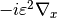

Gradient¶
About the Gradient class¶
The WaveBlocks Project
@author: R. Bourquin @copyright: Copyright (C) 2010, 2011, 2012, 2013, 2014, 2015, 2016 R. Bourquin @license: Modified BSD License
Inheritance diagram¶

Class documentation¶
-
class
WaveBlocksND.Gradient[source]¶ This class implements the computation of the action of the gradient operator .
-
apply_gradient(wavepacket, *, component=None)[source]¶ Compute the effect of the gradient operator on the basis functions
 of a component
of a component  of a wavepacket
of a wavepacket  .
.Parameters: - wavepacket – The wavepacket containing .
- component (Integer or
None.) – The index of the component .
of the component .
Returns: Extended basis shape
 and new coefficients
and new coefficients  .
.- wavepacket – The wavepacket
-